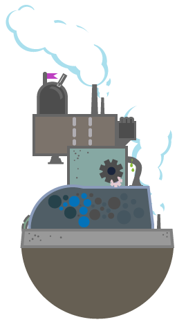
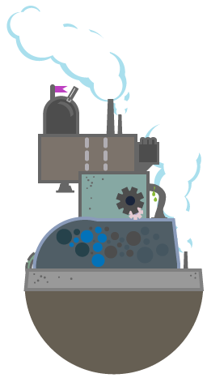

Building and Running Your Own Content Marketing Machine
- on -


CONTENT MARKETING IS
CRITICAL
TO LEAD & OPPORTUNITY GENERATION
LEAD GENERATION -
|
Ads don't work
Average industry
click through rate of less than 0.1%! |
SEO needs content
No longer about
technical tricks, but instead about quality content |
Social needs content
Marketers must
distribute quality content through social channels |
LEAD NURTURING -
Content is the fuel that powers the Marketing Automation engine
Email & lead nurturing campaigns struggle without compelling content
BOTTOM LINE -
Content Marketing delivers superior lead results vs. all other tactics
|
Inbound Leads Cost 62% Than
Outbound Leads |
Content Marketing Leads Cost 41%
Less Than The Best Alternative Channel, Paid Search |


BUT
MOST
MARKETERS STRUGGLE WITH
CONTENT MARKETING
CONTENT MARKETING
All Marketers know that they need to become publishers, but few are doing it well.

- SOURCE: ABERDEEN
CONTENT MARKETING TAKES
PROCESS, TOOLS, PRACTICES TO SUCCEED
PROCESS, TOOLS, PRACTICES TO SUCCEED
Like any business operation (e.g. CRM for Sales), content marketing requires processes, best practices & tools

- SOURCE: ABERDEEN
 

YOU CAN BUILD YOUR OWN
CONTENT MARKETING MACHINE!
CONTENT MARKETING MACHINE!
The Best Practices & Processes behind
Content Marketing have been identified.
Content Marketing have been identified.
You can learn about them and
how to apply them through this
Kapost guide -
how to apply them through this
Kapost guide -
"How to Build and Operate a
Content Marketing Machine"
Content Marketing Machine"

CONTENT MARKETING MACHINE
Kapost organizes content marketing as a structured business process,
enforcing best practices and optimizing results
enforcing best practices and optimizing results